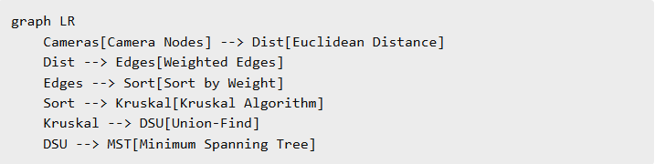

Module 2 – Crime Prevention System
A. CCTV / Sensor Network Design
Designs a minimum-cost CCTV surveillance network using graph algorithms.
How the Code Works
Each CCTV camera is modeled as a graph node. Distance between cameras forms
edge weights. Kruskal’s algorithm builds a Minimum Spanning Tree using
Union-Find to avoid cycles.
B. Identity Search & Log Matching
Detects known criminals and suspicious activity patterns from logs.
How the Code Works
Trie supports fast name lookups. Bloom filter removes non-existing suspects.
String scanning flags suspicious entries in logs efficiently.
JSON-Based Real World Input
1️⃣ CCTV Network Input
{
"cameras": [
{ "id": 1, "x": 0, "y": 0 },
{ "id": 2, "x": 3, "y": 1 },
{ "id": 3, "x": 5, "y": 4 },
{ "id": 4, "x": 7, "y": 2 }
],
"connections": [
{ "from": 1, "to": 2 },
{ "from": 2, "to": 3 },
{ "from": 3, "to": 4 }
]
}
2️⃣ Suspect & Log Input
{
"suspects": ["Ravi Kumar", "Anita Sharma", "Mohit Verma"],
"logs": [
"Anita Sharma spotted near warehouse",
"Suspicious movement by Ravi Kumar",
"Unknown person near CCTV"
]
}
How the Algorithm Uses JSON (Approach-1)
- Camera data builds graph nodes
- Edges weighted using Euclidean distance
- Kruskal forms minimum CCTV backbone
- Suspect names inserted into Trie & Bloom Filter
- Logs scanned for suspicious identity matches
Integrated C++ Code (JSON-Driven Crime Prevention)
// File: crime.cpp
// Compile: g++ -std=c++17 crime.cpp -O2 -o crime
// Run: ./crime
#include <bits/stdc++.h>
#include "json.hpp"
using namespace std;
using json = nlohmann::json;
// ===== DSU =====
struct DSU{
vector<int> p,r;
DSU(int n):p(n),r(n,0){ iota(p.begin(),p.end(),0); }
int find(int x){ return p[x]==x?x:p[x]=find(p[x]); }
bool unite(int a,int b){
a=find(a); b=find(b);
if(a==b) return false;
if(r[a]<r[b]) swap(a,b);
p[b]=a;
if(r[a]==r[b]) r[a]++;
return true;
}
};
double dist(pair<double,double>a, pair<double,double>b){
return hypot(a.first-b.first,a.second-b.second);
}
int main(){
ifstream f1("cctv_input.json");
ifstream f2("suspect_input.json");
json camData, susData;
f1 >> camData;
f2 >> susData;
vector<pair<double,double>> pos;
for(auto &c: camData["cameras"])
pos.push_back({c["x"], c["y"]});
vector<tuple<double,int,int>> edges;
for(int i=0;i<pos.size();i++)
for(int j=i+1;j<pos.size();j++)
edges.push_back({dist(pos[i],pos[j]), i, j});
sort(edges.begin(),edges.end());
DSU dsu(pos.size());
double cost = 0;
for(auto &[w,u,v]:edges)
if(dsu.unite(u,v)) cost += w;
cout << "Minimum CCTV Network Cost = " << cost << "\\n";
unordered_set<string> suspects;
for(auto &s: susData["suspects"])
suspects.insert(s);
cout << "Suspicious Logs:\\n";
for(auto &l: susData["logs"])
for(auto &s: suspects)
if(l.get<string>().find(s)!=string::npos)
cout << " - " << l << "\\n";
}
System Visualization & Output
Visual outputs and internal working diagrams of the Crime Prevention system.

CCTV Network Graph
Graph representation of CCTV nodes and weighted connections.

Minimum Spanning Tree
Optimized CCTV network generated using Kruskal’s algorithm.

Trie-Based Identity Search
Fast lookup of suspect names using Trie data structure.

Suspicious Log Detection
Log scanning and pattern matching for crime detection.